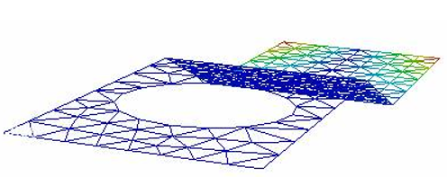

Display Mode
Display mode allows users to view the model in any one of the following modes.
- Shaded (default)
- Shaded Mesh
- Wire Frame
- Hidden Line
- Point
- Transparent
Shaded Mode
Model surfaces will be displayed with smooth shadings and contour color information.
Shortcut key: Shift + S
Shaded Mesh
Applies mesh on the shaded model. Shaded mesh color can be changed by using Display | Display Mode | Shaded Mesh Color options.
Users can set vertex color to the shaded mesh lines or set a single color. Shortcut key : Shift + M

Wire Frame Model
Displays the model with mesh lines without any shading. Shortcut key : Shift + W
Hidden Line
This is similar to wire frame model except that hidden lines are also removed from the scene. Shortcut key : Shift + H
Point
Displays only the Nodal points. There are no edges or face sets. Shortcut key : Shift + P
Transparent
Displays model with shading similar to Shaded Mode along with transparency on each surface. Shortcut-key: Shift + T
Note: Default transparency percentage is 93%. Users can edit transparency percentage using Transparency option in Edit | Options panel.